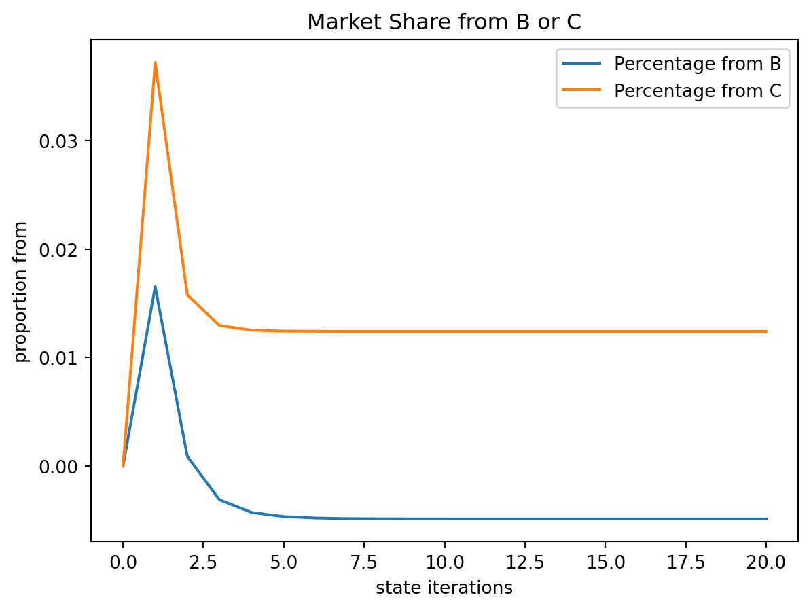
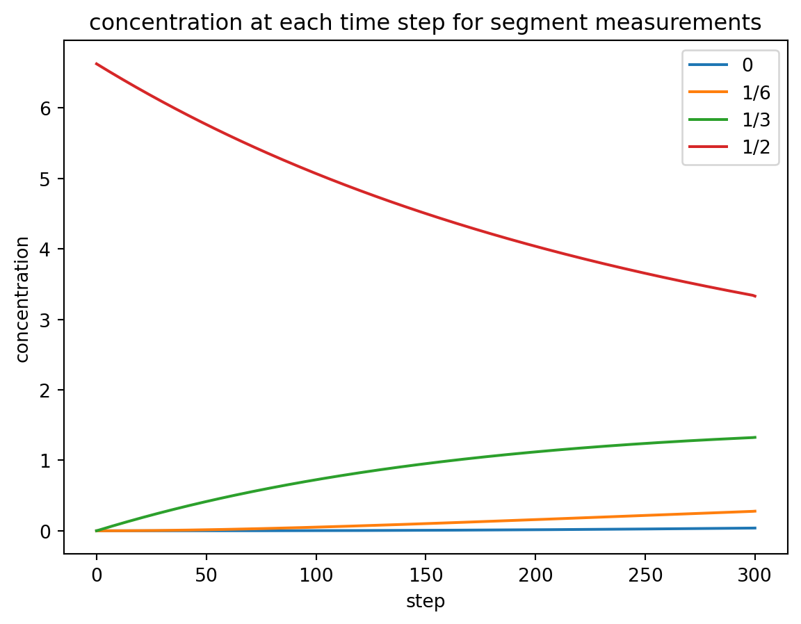
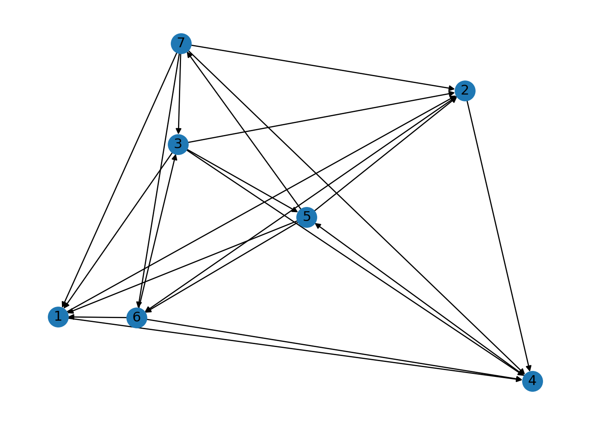

import sympy as sym
sb = sym.Symbol
import pandas as pdXiao Wei
Markov Chains
For this problem, we are given the transition stochastic matrices of market shares for a market composed of three players. The exercise asks us to find steady state of market shares under a hypothetical scenario where we have to choose between two different transition matrices.
The transition matrix
M = sym.Matrix([[.5, .2, .3],[.2, .6, .1], [.3, .2, .6]])
M\(\displaystyle \left[\begin{matrix}0.5 & 0.2 & 0.3\\0.2 & 0.6 & 0.1\\0.3 & 0.2 & 0.6\end{matrix}\right]\)
The market shares 3 years later if the starting state is the market split evenly between the 3 players. I was a bit surprised that company 2 got the least amount of share instead of company 1 since company 1 has the smallest value in the diagonal meaning they keep less of their own customers in each subsequent state.
M**3 * sym.Matrix([0.33333, 0.33333, 0.33333])\(\displaystyle \left[\begin{matrix}0.33899661\\0.27533058\\0.38566281\end{matrix}\right]\)
First campaign transition matrix
Mc1 = sym.Matrix([[.5, .32, .3],[.2, .48, .1], [.3, .2, .6]])
Mc1\(\displaystyle \left[\begin{matrix}0.5 & 0.32 & 0.3\\0.2 & 0.48 & 0.1\\0.3 & 0.2 & 0.6\end{matrix}\right]\)
To calculate the steady state of the market shares, we multiply the transition matrix large number of times
Mc1**50 * sym.Matrix([0.33333, 0.33333, 0.33333])\(\displaystyle \left[\begin{matrix}0.380562995951417\\0.22266983805668\\0.396757165991903\end{matrix}\right]\)
As a check we can use the transition matrix one more time to see that the market share stays the same
Mc1**51 * sym.Matrix([0.33333, 0.33333, 0.33333])\(\displaystyle \left[\begin{matrix}0.380562995951417\\0.22266983805668\\0.396757165991903\end{matrix}\right]\)
I’m not sure why this solution doesn’t work, as it would serve as a good proof of the steady state. The steady state is the vector in which the transition matrix applied to the vector results in the same vector.
formula:
Ax = x
A(x - I) = 0
(sym.eye(3) - Mc1).gauss_jordan_solve(sym.zeros(3, 1))[0]\(\displaystyle \left[\begin{matrix}0\\0\\0\end{matrix}\right]\)
We can also see that the intial state doesn’t matter when calculating the steady state
Mc1**50 * sym.Matrix([0, 1, 0])\(\displaystyle \left[\begin{matrix}0.380566801619433\\0.222672064777328\\0.396761133603239\end{matrix}\right]\)
second campaign transition matrix
Mc2 = sym.Matrix([[.5, .32, .3+.6*.2],[.2, .48, .1], [.3, .2, .6*.8]])
Mc2\(\displaystyle \left[\begin{matrix}0.5 & 0.32 & 0.42\\0.2 & 0.48 & 0.1\\0.3 & 0.2 & 0.48\end{matrix}\right]\)
Mc2**50 * sym.Matrix([0.33333, 0.33333, 0.33333])\(\displaystyle \left[\begin{matrix}0.431422288077188\\0.230872949689869\\0.337694762232943\end{matrix}\right]\)
So you’ve shown here that the long-term behavior is the same for each of the two initial distributions you chose. To convince yourself that this is truly universal, though, you’d want to try a number of different initial distributions, not just two.
(Of course, using the concepts of eigenvalues and eigenvectors, we can see that the steady state you found corresponds to the dominant eigenvector of the matrix. That means that you will tend to arrive there unless your initial distribution is orthogonal to that eigenvector, exactly equal to one of the other eigenvectors. You wouldn’t have found one of these other eigenvectors anyways just trying initial distributions by chance…)
Report
It is better to run campaign 2 as the steady state vector for campaign 2 is 43% vs 38% for campaign 1. It does not matter what the starting state is the end state after many iterations would be the same. As such the second campaign has insurance company A with a higher market share.
Below is the chart for the net gain our company A gains from either company B for marketing campaign 1 or company C for marketing campaign 2 for each subsequent iteration.
Implicit assumption of this model is that the effectiveness of each marketing campaign in driving consumer behavior remains constant across each time period. This is most likely not the case in reality. In either case though it looks like marketing campaign 2 is the better campaign unless company B has a lot more customers than company C in the initial period.
The below code iterates through states and calculates in each state how much company A gains from B or company C depending on whether marketing strategy 1 or 2 was chosen
c1_state = sym.Matrix([0.33333, 0.33333, 0.33333])
c2_state = sym.Matrix([0.33333, 0.33333, 0.33333])
gains = pd.DataFrame([], columns=['Percentage from B', 'Percentage from C'])
gain_from_b = 0
gain_from_c = 0
for step in range(21):
gains.loc[int(step)] = (gain_from_b, gain_from_c)
next_state_c1 = Mc1 * c1_state
next_state_c2 = Mc2 * c2_state
gain_from_b = next_state_c1[1] * Mc1[0, 1] - c1_state[0] * Mc1[1, 0]
gain_from_c = next_state_c2[2] * Mc2[0, 2] - c2_state[0] * Mc1[2, 0]
c1_state = next_state_c1
c2_state = next_state_c2gains = gains.astype(float)gains.plot(kind='line', xlabel='state iterations', ylabel="proportion from", title="Market Share from B or C")
This meets expectations now! Grade: M
Diffusion
For the diffusion project, we are given the problem of finding the concentration at each of the 7 segments of a tube at each time step. However, we are not given the initial amount of gas released into the middle of the tube and are only given two measurements at time step t240 and t270 as seen below. We must use linear algebra to approximate the diffusion equation using a transition matrix and guess the values of the intial concentration as well as the diffusion constant.
import sympy as sym
import numpy as np
import pandas as pd
sb = sym.Symbol
In the below cell I create the transition matrix for each segment of the tube. The transition equation was part of equation 3.10
There are a total of 7 segments measured which results in a 7x7 transition matrix, each segment is a function of itself and its adjoining segments and the constants D, h.
N=7
M = sym.zeros(N)
for i in range(N):
if (i>0):
M[i-1,i]=1
M[i,i]=-2
if (i<N-1):
M[i+1,i]=1
# M[0, i] = 0
# M[6, i] = 0
# M[i, 0] = 0
# M[i, 6] = 0
# M[5, 6] = 0
M\(\displaystyle \left[\begin{matrix}-2 & 1 & 0 & 0 & 0 & 0 & 0\\1 & -2 & 1 & 0 & 0 & 0 & 0\\0 & 1 & -2 & 1 & 0 & 0 & 0\\0 & 0 & 1 & -2 & 1 & 0 & 0\\0 & 0 & 0 & 1 & -2 & 1 & 0\\0 & 0 & 0 & 0 & 1 & -2 & 1\\0 & 0 & 0 & 0 & 0 & 1 & -2\end{matrix}\right]\)
Here are the starting states for T270 and T240 according to the textbook (see snippet above)
t270 = sym.Matrix([0.0, 0.051, 1.21, 3.48, 1.21, 0.051, 0.0])
t240 = sym.Matrix([0.0, 0.032, 1.23, 3.69, 1.23, 0.032, 0.0])Going forward from 240 to 270, I tried various figures for D here and settled on the one below. Note the 36 is supposed to represent 1/h^2
transition formula
t_i+1 = t_i + M * t_i * D/h^2
Dh2 = 0.00004 * 36
current = t240
for step in range(240, 271):
next_step = current + M*current * Dh2
if step % 10 == 0:
print(step, current)
print('\n')
current = next_step240 Matrix([[0], [0.0320000000000000], [1.23000000000000], [3.69000000000000], [1.23000000000000], [0.0320000000000000], [0]])
250 Matrix([[0.000562471243392380], [0.0486924553785851], [1.24759546552771], [3.62029245984376], [1.24759546552771], [0.0486924553785851], [0.000562471243392380]])
260 Matrix([[0.00134480689310895], [0.0651618382102242], [1.26395165777253], [3.55305081122375], [1.26395165777253], [0.0651618382102242], [0.00134480689310895]])
270 Matrix([[0.00233753410690556], [0.0814003695987503], [1.27913496114619], [3.48817057984740], [1.27913496114619], [0.0814003695987503], [0.00233753410690556]])
Now that I have settled on a value for D. I will move backwards from 270 to 0. Output is every 30 steps and 0. As gone over in class, the transition matrix and multiplier needs to be taken with an inverse since we are now moving backwards instead of forwards as in the equation given by the text book.
transition formula:
t_i+1 = t_i + M * t_i * D/h^2
t_i+1 = t_i
t_i = (I + MD/h2)-1 t_i+1
Dh2 = 0.00004 * 36
current = t270
for step in range(270, -1, -1):
prev_step = (sym.eye(current.shape[0]) + M* Dh2).inv()*current
if step % 40 == 0:
print(step, current)
print('\n')
current = sym.Matrix(np.maximum(prev_step, 0))
print(step, current)
init_state = current240 Matrix([[0], [0.00212689488945927], [1.15621985395050], [3.68754809461451], [1.15621985395048], [0.00212689488945964], [0]])
200 Matrix([[9.47143103797723e-5], [0], [1.06279149507993], [4.00254036435968], [1.06279149507989], [0], [9.47143103797697e-5]])
160 Matrix([[0.000194835210686209], [0], [0.937128531983600], [4.36938971176471], [0.937128531983537], [0], [0.000194835210686203]])
120 Matrix([[0.000294410849364334], [0], [0.771792042493187], [4.79882186271244], [0.771792042493099], [0], [0.000294410849364323]])
80 Matrix([[0.000389481701770366], [0], [0.557712169649991], [5.30388057840637], [0.557712169649879], [0], [0.000389481701770348]])
40 Matrix([[0.000474717247747708], [0], [0.283827585787304], [5.90043223273764], [0.283827585787171], [0], [0.000474717247747682]])
0 Matrix([[0.000543077482862398], [8.59904987581519e-5], [0], [6.60726130357147], [0], [8.59904987583709e-5], [0.000543077482862360]])
0 Matrix([[0.000544502698002186], [9.92726600399977e-5], [0], [6.62637281796703], [0], [9.92726600402174e-5], [0.000544502698002148]])I assume the tube is empty except for the initial release in the middle at state 0. The initial amount “f”, is the max of step 0 from above. I output the amounts for time 210 and 300 as per the assignment instructions.
import warnings
warnings.filterwarnings("ignore")
current = sym.zeros(7, 1)
current[3] = np.max(init_state)
plot_df = pd.DataFrame([], columns=['0', '1/6', '1/3', '1/2'], dtype=np.float64)
for step in range(0, 301):
plot_df.loc[step] = current[:4]
next_step = current + M*current * Dh2
if step==0 or step ==210 or step == 300:
print(step, current)
print('\n')
current = next_step
plot_df.loc[step] = current[:4]0 Matrix([[0], [0], [0], [6.62637281796703], [0], [0], [0]])
210 Matrix([[0.0168682745749364], [0.170506299982379], [1.14711106859719], [3.95456622586664], [1.14711106859719], [0.170506299982379], [0.0168682745749364]])
300 Matrix([[0.0388222436755021], [0.277312234731033], [1.32425109802597], [3.33575720208435], [1.32425109802597], [0.277312234731033], [0.0388222436755021]])
Since the readings are symmetrical across the middle I only plot half the tube including the middle. Each line below is a reading at each segment from 0 to 1/2.
plot_df = plot_df.astype(np.float_)
plot_df.plot(kind='line', xlabel="step", ylabel='concentration', title="concentration at each time step for segment measurements")
It is expected that the center curve looks like an logarithmic decay, the 1/3 curve looks like a logarithmic increase which I suppose will decrease at the point. Using Linear Algebra does seem like a much easier approach than the actual Physics of computing the diffusion constant as well as the intial concentration.
This is a great solution! You’ve done a good job of explaining your reasoning and the steps you took to arrive at your solution. The plots are clear and easy to understand.
Grade: E
Sports Ranking
This problem explores loading tournament data into graph format and producing rankings using matrix arithmetic/algebra. It explores using simple rank, power rank, and inverse pagerank as different ranking algorithms and compares/contrasts each method.
import sympy as sym
import numpy as np
import pandas as pd
import networkx as nx
sb = sym.Symbol
sm = sym.MatrixLoading the data into networkx
G = nx.DiGraph()
G.add_nodes_from([1, 2, 3, 4, 5, 6, 7])
G.add_edges_from([(1, 2), (7, 3), (2, 4), (4, 5), (3, 2), (5, 1), (6, 1), (3, 1), (7, 2), (2, 6), (3, 4), (7, 4)
, (5, 7), (6, 4), (3, 5), (5, 6), (7, 1), (5, 2), (7, 6), (1, 4), (6, 3)])Draw the graph
nx.draw(G, with_labels=True)
adjacency matrix
adj_mat = nx.to_numpy_array(G)
adj_matarray([[0., 1., 0., 1., 0., 0., 0.],
[0., 0., 0., 1., 0., 1., 0.],
[1., 1., 0., 1., 1., 0., 0.],
[0., 0., 0., 0., 1., 0., 0.],
[1., 1., 0., 0., 0., 1., 1.],
[1., 0., 1., 1., 0., 0., 0.],
[1., 1., 1., 1., 0., 1., 0.]])win-loss record
wins = adj_mat.sum(axis=1)
winsarray([2., 2., 4., 1., 4., 3., 5.])losses = adj_mat.sum(axis=0)
lossesarray([4., 4., 2., 5., 2., 3., 1.])Simple Rank
Here is the simple ranking for each team/node by wins
team = pd.DataFrame({'wins': wins, 'losses': losses}, index=range(1, 8))
team.sort_values(['wins', 'losses'], ascending=[False, True])| wins | losses | |
|---|---|---|
| 7 | 5.0 | 1.0 |
| 3 | 4.0 | 2.0 |
| 5 | 4.0 | 2.0 |
| 6 | 3.0 | 3.0 |
| 1 | 2.0 | 4.0 |
| 2 | 2.0 | 4.0 |
| 4 | 1.0 | 5.0 |
Vertex Power
Power ranking: A + A^2
power_rank = (adj_mat + adj_mat**2).sum(axis=1)
pd.Series(power_rank, index=range(1, 8)).sort_values(ascending=False)7 10.0
3 8.0
5 8.0
6 6.0
1 4.0
2 4.0
4 2.0
dtype: float64Reverse PageRank
Here I transform the adjacency matrix into a stochastic transition matrix by dividing each column by the sum of degrees
col_sums = adj_mat.sum(axis=0)
P = np.zeros(adj_mat.shape)
for i in range(adj_mat.shape[0]):
P[i, :] = adj_mat[i, :] / col_sums
pd.DataFrame(P)| 0 | 1 | 2 | 3 | 4 | 5 | 6 | |
|---|---|---|---|---|---|---|---|
| 0 | 0.00 | 0.25 | 0.0 | 0.2 | 0.0 | 0.000000 | 0.0 |
| 1 | 0.00 | 0.00 | 0.0 | 0.2 | 0.0 | 0.333333 | 0.0 |
| 2 | 0.25 | 0.25 | 0.0 | 0.2 | 0.5 | 0.000000 | 0.0 |
| 3 | 0.00 | 0.00 | 0.0 | 0.0 | 0.5 | 0.000000 | 0.0 |
| 4 | 0.25 | 0.25 | 0.0 | 0.0 | 0.0 | 0.333333 | 1.0 |
| 5 | 0.25 | 0.00 | 0.5 | 0.2 | 0.0 | 0.000000 | 0.0 |
| 6 | 0.25 | 0.25 | 0.5 | 0.2 | 0.0 | 0.333333 | 0.0 |
As per instructions, 85% chance of using the transition matrix and 15% chance of teleportation to a random node
alpha = 0.85
v = sym.ones(adj_mat.shape[0])[:, 0] / adj_mat.shape[0]
v\(\displaystyle \left[\begin{matrix}\frac{1}{7}\\\frac{1}{7}\\\frac{1}{7}\\\frac{1}{7}\\\frac{1}{7}\\\frac{1}{7}\\\frac{1}{7}\end{matrix}\right]\)
Formula:
(I - aP)
pg_mat = (sym.eye(P.shape[0]) - alpha * P)
pg_mat\(\displaystyle \left[\begin{matrix}1.0 & -0.2125 & 0 & -0.17 & 0 & 0 & 0\\0 & 1.0 & 0 & -0.17 & 0 & -0.283333333333333 & 0\\-0.2125 & -0.2125 & 1.0 & -0.17 & -0.425 & 0 & 0\\0 & 0 & 0 & 1.0 & -0.425 & 0 & 0\\-0.2125 & -0.2125 & 0 & 0 & 1.0 & -0.283333333333333 & -0.85\\-0.2125 & 0 & -0.425 & -0.17 & 0 & 1.0 & 0\\-0.2125 & -0.2125 & -0.425 & -0.17 & 0 & -0.283333333333333 & 1.0\end{matrix}\right]\)
solving for:
(I - aP)x = (1 - a)v
The output is the reverse page rank ranking
pd.Series(list(pg_mat.gauss_jordan_solve(v* (1-alpha))[0]), index=range(1, 8)).sort_values(ascending=False)5 0.244524719927139
7 0.184188693730917
3 0.176269636041093
6 0.130332241204918
4 0.125351577397605
2 0.0796658079275577
1 0.0596673237707704
dtype: objectWeighted graph power ranking
I add weights using networkx and output the resulting weighted adjacency matrix
Gw = nx.DiGraph()
Gw.add_nodes_from([1, 2, 3, 4, 5, 6, 7])
Gw.add_weighted_edges_from([(1, 2, 4), (7, 3, 8), (2, 4, 7), (4, 5, 3), (3, 2, 7), (5, 1, 7), (6, 1, 23)
, (3, 1, 15), (7, 2, 6), (2, 6, 18), (3, 4, 13), (7, 4, 14)
, (5, 7, 7), (6, 4, 13), (3, 5, 7), (5, 6, 18), (7, 1, 45), (5, 2, 10), (7, 6, 19), (1, 4, 13), (6, 3, 13)])
adj_matw = nx.to_numpy_array(Gw)
adj_matwarray([[ 0., 4., 0., 13., 0., 0., 0.],
[ 0., 0., 0., 7., 0., 18., 0.],
[15., 7., 0., 13., 7., 0., 0.],
[ 0., 0., 0., 0., 3., 0., 0.],
[ 7., 10., 0., 0., 0., 18., 7.],
[23., 0., 13., 13., 0., 0., 0.],
[45., 6., 8., 14., 0., 19., 0.]])The power rank using weighted edges
pd.Series((adj_matw + adj_matw**2).sum(axis=1), index=range(1, 8)).sort_values(ascending=False)7 2774.0
6 916.0
5 564.0
3 534.0
2 398.0
1 202.0
4 12.0
dtype: float64This is fine. I would have liked to see a bit more explanation of the different ranking methods and how they differ from each other, with specific examples from the data…
Grade: M
I’ve just spent a while playing around with this! The matrix is ill-conditioned, so the solver is having trouble. It ends up deciding that the matrix is singular and giving you the trivial solution. But it’s not singular, it’s just very close to it.
In any case, you do get the right result just by finding the eigenvectors of Mc1; the eigenvector corresponding to the eigenvalue 1 is the steady state you found. So odd! But it’s a good reminder that numerical linear algebra can be a bit of a minefield.